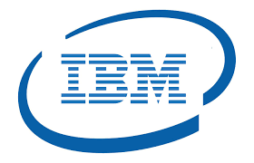
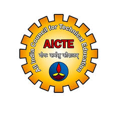
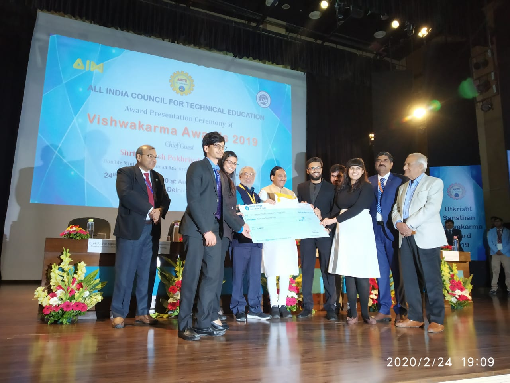
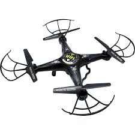
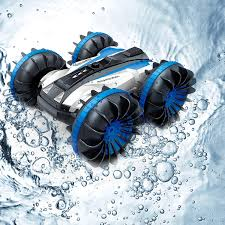
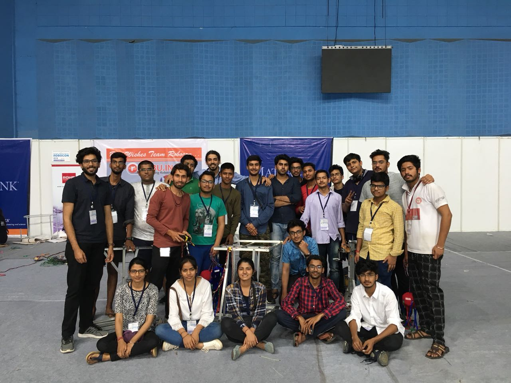

IBM Hack challenge-2020 | SmartInternz
 About The Challenge :
We were asked to forecast the wind power of a wind farm. As, With the increase in the population of the world,
its demand for the energy supply is hiking day by day.
Solution Description:
The dataset was not provided. Therefore, we used an open dataset from the Kaggle and open government data.
We clubbed the data together to make it ready to start the project.
We used Random Forest Regression to predict wind power.We used Facebook Prophet to forecast the results.
We showcased the forecast for the next 100hrs.
We used Node-Red from IBM Watson to deploy the machine learning code into a web dashboard.
- Github
Reach me out using below github icon and know in detail about the project.
AICTE Chhatra Vishwakarma Awards 2019-2020
 About The Challenge :
Challenge was to come up with a cost-effective innovation using crop waste to help the Indian villagers.
Under the category crop-waste management our team won 1st runner-up at the national level and were awarded 30k cash price from Mr Ramesh Pokhriyal, Minister of Ministry of Education,
India and Prof. Anil D. Sahasrabudhe, Chairman of AICTE.

Solution Description:
We built the Mushroom Automatic Grid Incubator. Mushrooms contain a higher amount of proteins and can be grown easily at any incubator which full fill its optimum environmental conditions. I take care of the entire automation e.g. to maintain the optimum condition of the incubator which includes humidity, temperature and light. It also included the digital visualization of the internal condition of the incubator.
- Github
Reach me out using below github icon and know in detail about the project.
IIT Roorkee Technomanagement Fest | Cognizance-2019
About The Challenge :
The problem statement was to build a Quadrone. This Quadrone was supposed to pick and drop the first aid kits successfully over the range of hills in time of disasters.
Solution Description:We built a drone with an APM 2.8 Flight controller. We incorporate multiple sensors like IR, GPS, Ultrasound, Barometer pressure sensor to come across real-life problems and to track the drone easily. We bought the customized chassis, propellers and landing gears, then installed it all together.
IIT Kharagpur Technomanagement Fest | Kshitij-2019
 About The Challenge :
This was my very first technical event where I lead a team. So,c I started with an amphibious remote control car. An RC car that can travel on both land and water, and can pick and drop the parcels as additional accessories.
Solution Description:We built a two-stage RC car, My team members from the Mechanical branch took care of the entire chassis design, types of gear to stand with the servo and BLDC motors. This was the time where I learnt and experiment so much with BLDC and ESCs pair, servo motor and industrial gear, 4-channel receiver and transmission pair.
Asia Pacific Robot Contest | ABU Robocon 2018
 About The Challenge :
It was an Asia-Pacific robotic challenge held at MIT Pune. The challenge was to play a game in the arena to project balls out of the rings before the opponent's robot.
Solution Description:This was my very first experience with this level of competition. I was in my first year of graduation and was introduced to basic process like fabrication, dealing with motors and wires, the dimensions of the arena and its understanding. Our team built one automatic line follower robot and another mannual robot.